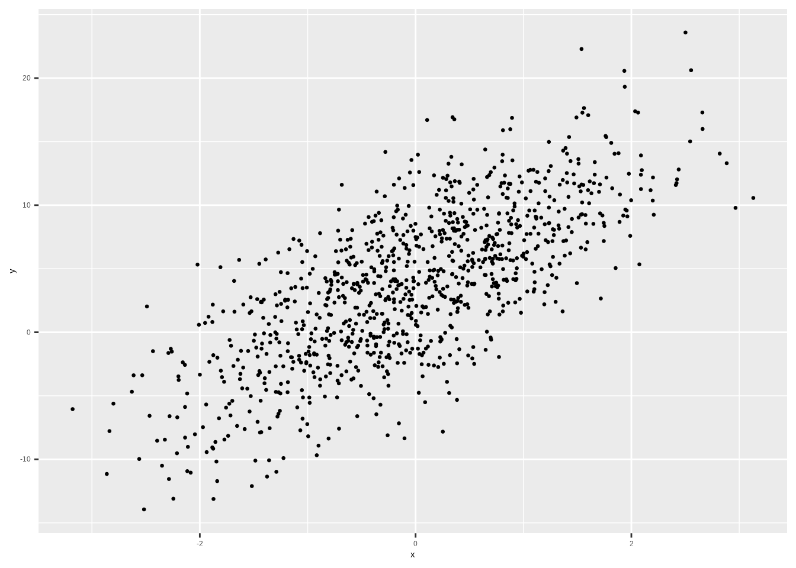
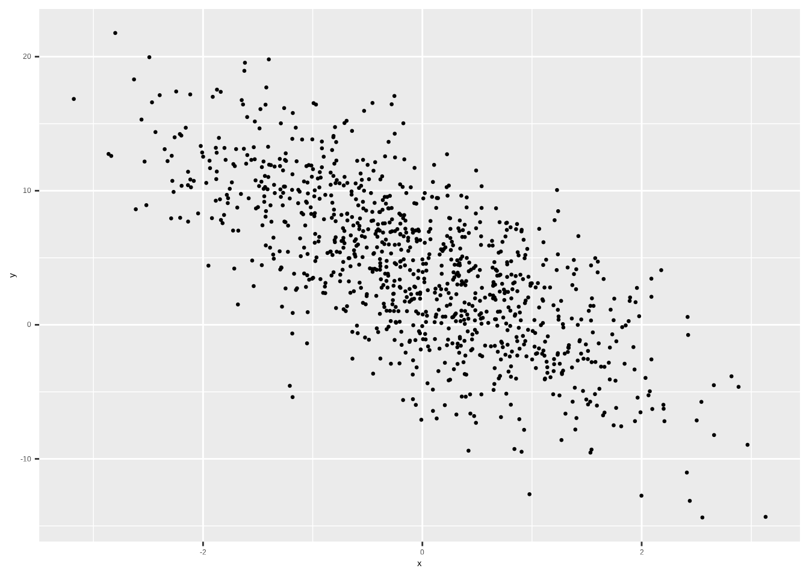
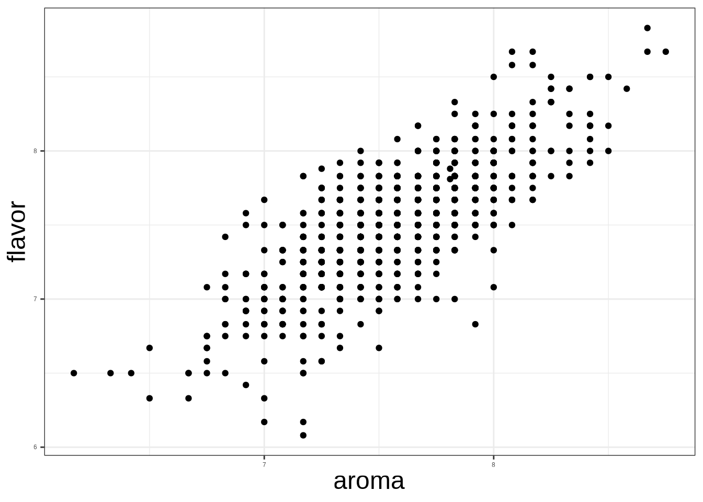

Linear Models
Announcements
Scorpio Season is Here!!
The first 6 reading assignments and quizzes are open for retakes until October 31!
This is your last chance!!
No more new chances will be coming for remaining of semester.
Other Assignment are still due.
Plotathon

Group Models
Group Models
The independent variables are used to indicate groups.
Danceability Model
\[ \hat Y_i = 0.6185 - 0.0455 X - 0.1095 Z \]
\[ Z = \left\{\begin{array}{cc} 1 & Speak\ Now\\ 0 & Other \end{array} \right. \]
\[ X = \left\{\begin{array}{cc} 1 & Midnights\\ 0 & Other \end{array} \right. \]
Linear Relationship
Scatter Plot
Positive Linear Relationship
Scatter Plot

Negative Linear Relationship
Modelling Linear Relationship
Modelling Linear Relationship
Regression Models
\[ \hat Y _i = b_0 + b_1 X_i \]
\(X_i\) is a continuous variable, not groups
Interpreting Intercept
Interpreting Slope
Motivating Example: Coffee
Motivating Example: Coffee

Fitting a Linear Model in R
Use the lm() function
lm(Y ~ X, data = data_set)Fitting a Linear Model

Fitting a Linear Model in R
lm(flavor ~ aroma, data = coffee_aroma)#>
#> Call:
#> lm(formula = flavor ~ aroma, data = coffee_aroma)
#>
#> Coefficients:
#> (Intercept) aroma
#> 1.1372 0.8435Fitting a Linear Model
\[ \hat Y = 1.1372 + 0.8435 X \]
\[ X = \mathrm{AROMA\ Score} \]
\[ \hat Y = \mathrm{Predicted\ Flavor\ Score} \]
Interpreting Intercept
\[ \hat Y = 1.1372 + 0.8435 X \]
Interpreting Slope
\[ \hat Y = 1.1372 + 0.8435 X \]
Predicting Value for given X
\[ \hat Y = 1.1372 + 0.8435 X \]